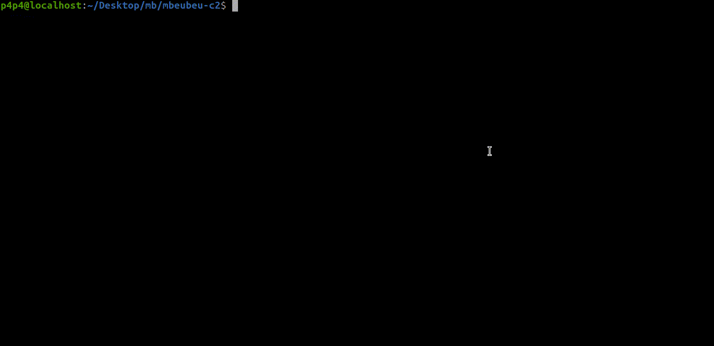
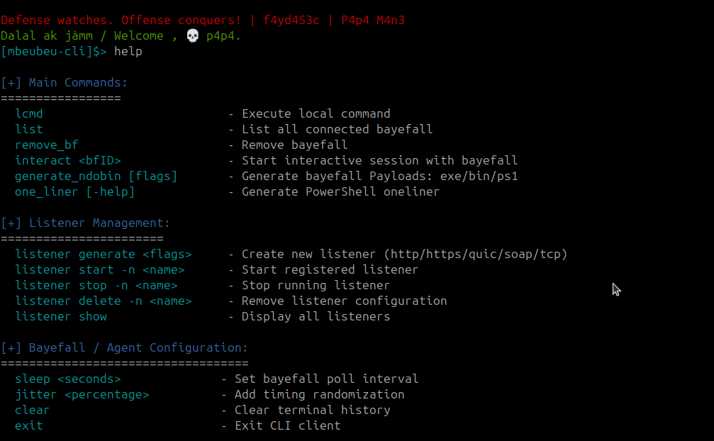

Client

1-Use the
mbeubeu-client binary to connect to the running TeamServer:./mbeubeu-client [flags]
2-
Available flags:
Available flags:
Flags:
-h, --help help for mbeubeu-cli
--password string Password for login (required)
--poll int Polling timeout in seconds (optional)
--port int C2 server port (default 2013)
--profile string Path to malleable C2 profile (default profiles/http_profile.yaml)
--server string C2 server IP address (required)
--user string Username for login (required)
3-
Example usage:
Example usage:
./mbeubeu-client --server 192.168.1.100 --user p4p4 --password P@ssw0rd1 --profile profiles/http_profile.yaml
If the --port flag is not set, the client will connect using the default port 2013. Make sure the TeamServer is configured to use the same port.

Next, proceed to set up your listener: Listeners Setup.